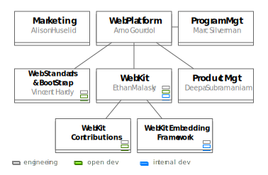

About this presentation
This presentation was given at the meet-up between the Bracket, PhoneGap and Web Platform teams on March 7th 2012. The slides are supporting the presentation, and may not have enough textual information to be understood by themselves.
The presentation is written in HTML5 and uses some features that are only supported by the most modern browsers. It was developed with the latest Chrome browser version and tested on Firefox 8.
You can navigate with the left and right arrow keys and with the up/down keys to drill into sections.
Web PlatformGoals
- Establish Adobe as a thought leader by improving the web.
- Make 'positive' contributions to Web standards (e.g., specification editing, test suites)
- Contribute to open source browser projects (especially WebKit)
- Engage and support the community and like-minded partners
- Enable easy, early adoption of web technologies by Adobe products.
Web PlatformExample Features
- CSS Regions and CSS Exclusions
- CSS Shaders
- Coming: CSS Transforms, CSS Filters, CSS Compositing, Image Progress Events, CSS Page Templates, ...
Engineering
Web Standards and BootstrapGoals
- Make 'positive' contributions to Web standards (e.g., specification editing, test suites)
- Bootstrap new efforts
- Contribute to existing efforts
Web Standards and BootstrapExamples
- CSS Regions and CSS Exclusions specifications in W3C
- CSS Shaders
- Coming: CSS Transforms, CSS Filters, CSS Compositing
- Collaboration with the WebKit Contribution Team on the prototype implementation and showcase demos
Web Standards and BootstrapMembers
- Dirk Schulze - SVG, CSS Transforms
- Rik Cabanier - SVG, CSS Compositing, CSS shaders
- Alan Stearns - CSS, CSS regions, exclusions, page templates
- Divya Manian - Designer and Web Developer, HTML5 advocate
- 2 TBH
- Vincent Hardy - CSS shaders, CSS regions/exclusions
WebKit ContributionsGoals
- With Standards, prototype and validate new features
- Implement new features in WebKit
- Contribute to WebKit engineering systems and infrastructure
- Engage the WebKit community on lists, blogs, IRC, etc.
WebKit ContributionsExamples
- CSS Regions and CSS Exclusions prototype and implementation
- CSS Shaders prototype and implementation
- CSS Transforms implementation
- Image Progress Events prototype and implementation
- Automate code coverage to validate WebKit patches
- Configure and maintain dynamic analysis buildbots to catch memory issues early
WebKit Embedding FrameworkGoals
- Reduce the barrier to entry for Adobe apps to leverage modern web technologies
- Focus on desktop apps' rich authoring and preview surfaces
- Lessen ongoing cost for apps to stay on the leading edge
WebKit Embedding FrameworkExamples
- Drover component: dvawebview
- Lua integration and cross-scripting
- Plugin support
- 64-bit support
- Hooks for debugging and profiling content
WebKit EngineeringMembers
Contributions - US
Larry, Hans, Rebecca, Max, Jacob, Bear, Alex, David, 3 TBH
Contributions - RO
Catalin G, Mihnea, Raul, Razvan, Mihai B
Embedding - RO
Catalin B, Stefan, Catalin A, Horia, Mihai T
WebKit Non-EngineeringMembers
- Deepa Subramaniam - Product Manager
- Christian Cantrell - App Developer at Large
- Alison Huselid - Product Marketing Manager
- Marc Silverman - Program Manager of Destiny